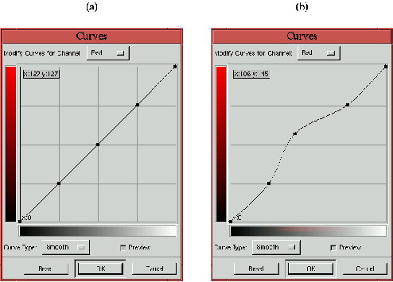
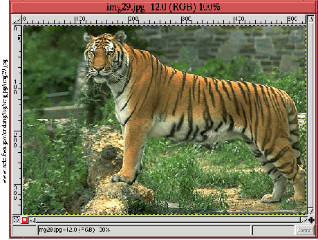
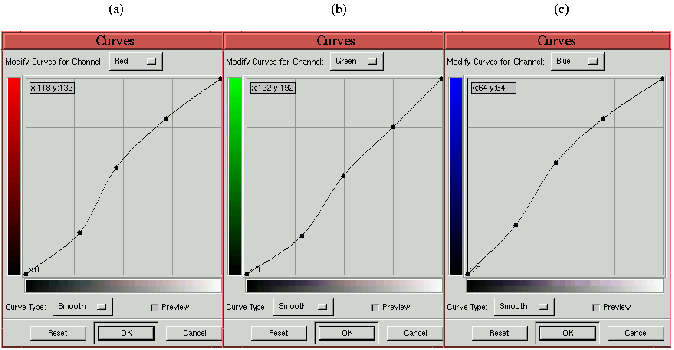
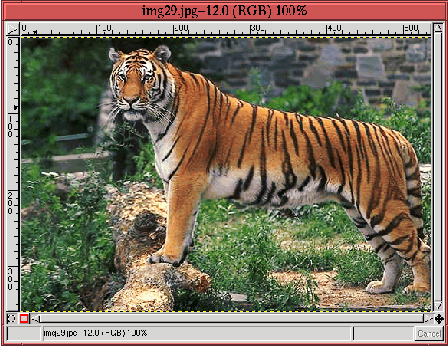

Next: 11.2.6
Детализация предмета изображения Up: 11.2
Коррекция цветового сдвига Previous: 11.2.4
Другие заранее известные
Next: 11.2.6
Детализация предмета изображения Up: 11.2
Коррекция цветового сдвига Previous: 11.2.4
Другие заранее известные
11.2.5 Техника возмущений
Иногда невозможно с уверенностью определить цвет в изображении, при том, что
цветовой сдвиг явно присутствует. Это означает, что нет цветов, которые могли бы
дать информацию для цветокоррекции. В этих условиях требуется иной подход.
Предлагаемый здесь метод, это то, что я называю техникой возмущений. Он основан
на визуальной обратной связи, которую обеспечивает включение кнопки ``Просмотр''
в диалоговом окне инструмента ``Кривые''. По сути, метод предполагает внесение
возрастающих возмущений в областях тени, полутона и блика для Красной, Зеленой и
Синей кривых. Возмущения, которые исправляют внешний вид изображения
сохраняются, а которые не способствуют улучшению - отменяются.
Figure: Применение техники возмущений:
(a) размещение контрольных точек для тени, полутона и света. (b)cмещение
контрольной точки в области полутонов.
 |
Рисунок 11.18
иллюстрирует эту идею. На рисунке 11.18
(a) представлен Красный канал диалогового окна инструмента ``Кривые'', на кривой
установлены три контрольные точки в позиции 1/4, 1/2, и 3/4. Участки кривой в
районе этих точек контролируют области тени, полутона и блика для Красного
канала. Техника возмущений работает путем смещения точек вверх или вниз и
наблюдения - какое изменение приводит к улучшению изображения. Рисунок 11.18
(b) демонстрирует возмущение контрольной точки в области полутонов.
Заметьте, что при перемещении средней контрольной точки смещается только
часть кривой между точками тени и света. Остальные участки кривой защищены от
перемещения другими двумя точками. Это очень полезно, так как позволяет
инструменту ``Кривые'' действовать на выбранном участке динамического диапазона
изображения.
Техника возмущений не научна и успех ее применения зависит от способности
пользователя оценивать, какие изменения улучшают изображение, а какие, напротив,
ухудшают. Тем не менее, циклическое постепенное изменение девяти точек часто
может привести к чудесным результатам. Следующий пример иллюстрирует описанный
подход.
Figure: Изображение с цветовым сдвигом.
Вы его видите?
 |
На рисунке 11.19
показано изображение тигра. В этом изображении имеется неуловимый повсеместный
сдвиг цвета в область зеленого. Сдвиг настолько маленький, что по началу я его
даже не смог распознать.
Техника возмущений это подход к цветокоррекции, который требует некоторых
экспериментов, поэтому все шаги сложно описать в формате книги. Лучшее, что я
смог сделать, это продемонстрировать вам результат.
Figure: Три кривые, настроенные с
использованием техники возмущений
 |
На рисунке 11.20
показан окончательный вид кривых для Красного, Зеленого и Синего каналов (a, b и
c соответственно). Результат представлен на рисунке 11.21.
Figure: Исправленное
изображение
 |
При сравнении рисунков 11.21
и 11.19
зеленый цветовой сдвиг в исходном изображении становится легко виден
невооруженным глазом. Более того, видно, что применение техники возмущений
позволило одновременно повысить контрастность изображения. Тигр выглядит
значительно лучше.
Важное предостережение: поскольку техника возмущений основана на визуальной
обратной связи, результат существенно зависит от индивидуальных характеристик
монитора. То что выглядит прекрасно на вашем мониторе, может смотреться совсем
иначе на другом. Метод описанный ранее в этой главе и основанный на определении
цветовых составляющих с последующим их использованием для коррекции цветов, не
зависит от характеристик монитора и представляет собой более предпочтительный
подход, когда это возможно.
Next: 11.2.6
Детализация предмета изображения Up: 11.2
Коррекция цветового сдвига Previous: 11.2.4
Другие заранее известные
Grigory Bakunov 2003-05-26